Making a responsive website was our first serious task. I had to present certain style of design (Deconstruction), create a page introducing myself and document the design of the webpage itself.
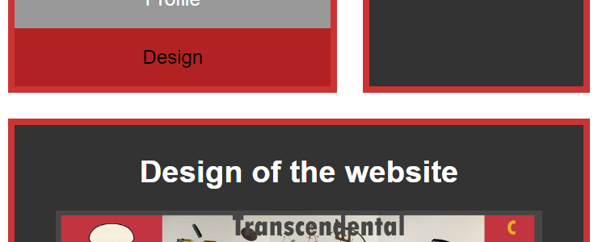
What I learned?
Making the website was a big step for me, because it was the first time when I had to code using html and css. I gained a lot of knowledge and in a very short period of time. Even though I started with the basics, I ended up with using grid layout to variate content on different devices. On the other hand, I had some trouble fixing issues that didn't let me validate css and html documents.
For this task our group had to make a prototype of our microsite and its two pages of content for mobile devices on Adobe XD.
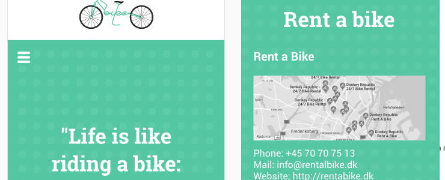
What I learned?
Creating a design in a group can be a tricky situation. It tooks us more time to agree what color scheme we want on our webpage than what content we want to include.
This task required to tell a 1 - 1.5 minute story without words. I teamed up with Simon, Lili and Luiza to turn it into a final product. Our decision was to create a simple boy and girl situation.
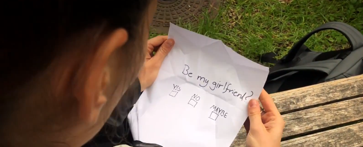
What I learned?
I understood how hard it is to find the perfect solution in a group in a very short time, because everyone had personal problems cutting time. I also learned how to write a plot for a video and act, since Simon took the part of shooting and editing.
For these two task we were arranged to work in groups. We had to create a story for our microsite, which included a beginning, a middle and an end and we had to consider the dramaturgical model.
Before filming we needed to make a storyboard, that clarified for all group members what images and dramaturgical elements we needed in order to tell the story. The storyboard had to explain the close ups, medium shots and long shots.
What I learned?
Doing these task I improved my listening skills and learned what does it mean to "kill your darlings", because some of my ideas were hard to make without professional skills. For the storyboard I wanted to try out filming some scenes myself, so we decided to go and try to make my ideas into reality.
This part of the task was to make a document which included info about our group, technical documentation of images, treatment and storyboard of the video, moodboard and style tile for microsite, design principles applied and last but not least test results.
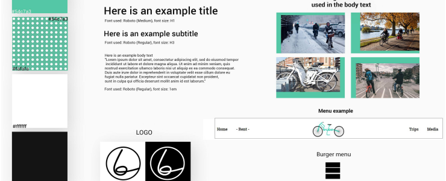
What I learned?
The hardest part for me, while making such a big documentation for the first time, was remembering and documenting exactly what we did all two weeks of the project. I learned that it is crucial to document everything at the exact time during the process.
The last hand-in of the group project was to submit a website which was a final product of our team. The website had to be 2-3 pages, be responsive to small, medium and large screens, include images that are normal and retina, video that we shot and be validated.
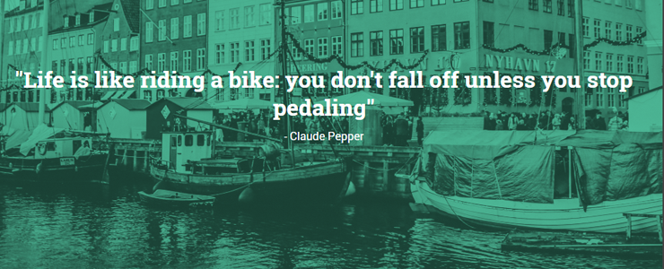
What I learned?
In this task I mostly did the video shooting, a bit of designing and coordinating work in group, since it was 5 of us with a lot of Ideas. In the end we were satisfied with our work, because we didn't encounter a lot of problems and managed to work as one unit.
In this task I had to code simple animations using js. It was required to have a character and make it do something with a click of button (at least 10 different animations).
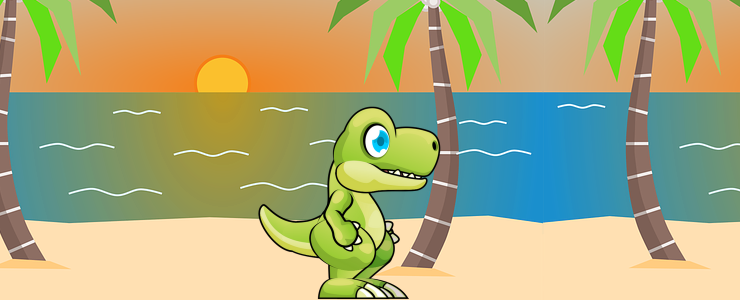
What I learned?
This was the first time for me using js. I learned how to use spritesheets and make moving characters with javascript functions that trigger keyframes. I wanted to learn as much as possible and make the animations webpage look as much as a normal webpage of a webgame.
For this task I was given a week to make my own story with protagonist and antagonist. Make my own graphics and animate one schene. For the hand-in I had to make a document that included: Storyboard, message of the story, genre/mood, narrative curve analysis, dramaturgic elements, style tile, charater design worksheet, backgrounds, spritesheet drawn in illustrator and link to animation.
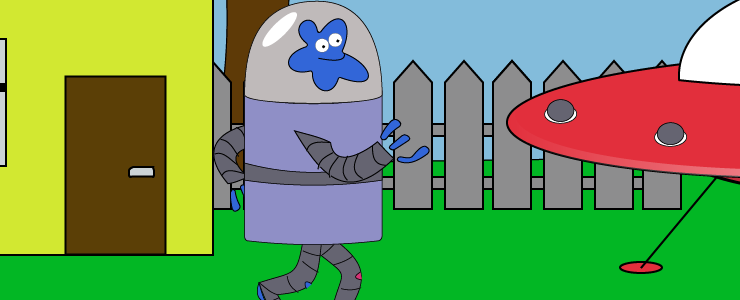
What I learned?
By doing this I learned how to document my work from the start, create and design my own story, sketch scenes and characters using a pencil and paper and then redraw them in illustrator making my own spritesheet. I was introduced how narratives work and how to make analysis. In the end I ended up with a comical fictional story of an alien who got scared of the toilet.
In groups of 2 we had to think of a scene of an existing story or to come up with our own animation, make a storyboard and sequence diagram. I grouped up with Agnė and we decide to create our own story.
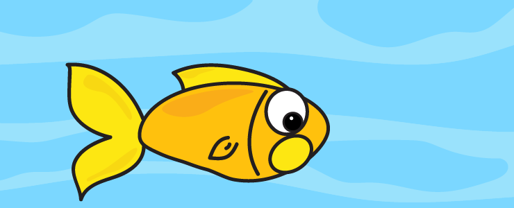
What I learned?
We splited the task; I code everything and Agnė makes illustrations. The hardest part was to code after Agnė finished drawing because I didn't make any code while she drew, I only made the Storyboard. So I had 2 hours to code everything, but most imporantly, I learned to code functions by following the sequence diagram.
Working with the "Smack the fly" game project I learned how to use random numbers in javascript to make the fly jump around the screen and make a simple but fun game in less than an hour
This was a one day project too. We had to select another project from the pool and code it.
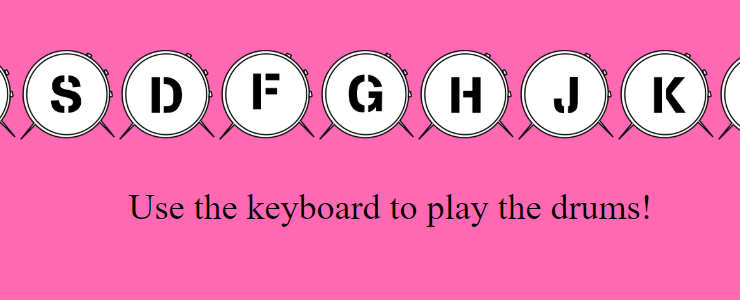
What I learned?
We chose to make a drum keyboard for this one. I learned how to assign a specific keyboard key to specific funtion (a drum). It was one the most interesting project I have ever done.
We had to make our own groups and create an interactive animation of a scene from movie, novel or story. Our group got Cinema Noir style and a song "Ain't No Cure For Love" by Leonard Cohen. I chose to be a coder of our project. The project had to have 3 types of events (with several user clicks), drawn graphics, our own recorded sounds, detailed storyboard, sequence diagram and personas collage.
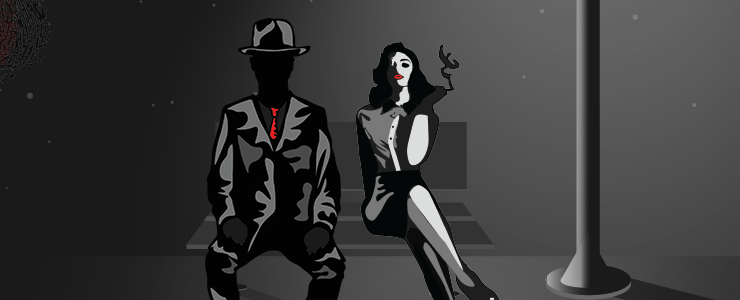
What I learned?
I had a chance to experienced how anxious it feels to be most important person in the group when everything depens on my coding skills. I learned to coordinate ideas in straight way and make use of everyday to polish every detail of the project.
For this task I had to do a prototype of an "Improved Fronter" - a Learning Management System that we designed during design sprint week
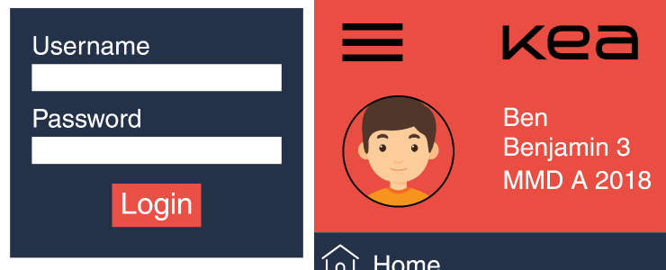
What I learned?
How hard it is to create a heavy duty LMS, that has to fullfill the client's goals and user expectations. As a user I already knew what I wanted to improve, but as I started to work I realised that the real struggle is to find the best solution that fits the user flow that we chose.
This week I had code a functional digital solution (HTML/CSS prototype) based on the XD prototype I produced previous week.
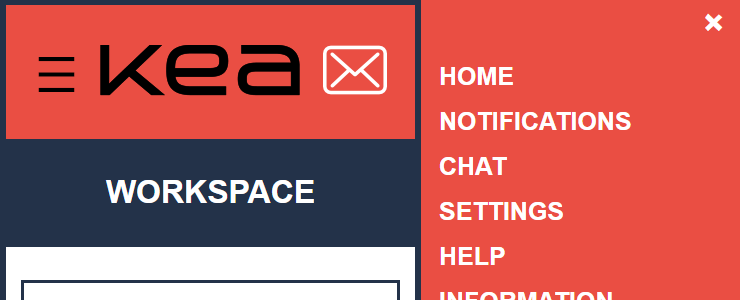
What I learned?
How to make a coded prototype of an XD prototype and that it is kinda hard to make it as good looking and functional as XD prototype. Also learned that user testing is crucial to design/create any solution.
For this task we had to use everything we learned in previous weeks and make a "new" mobile solution of improved Fronter that fills the goals of the clients contract
What I learned?
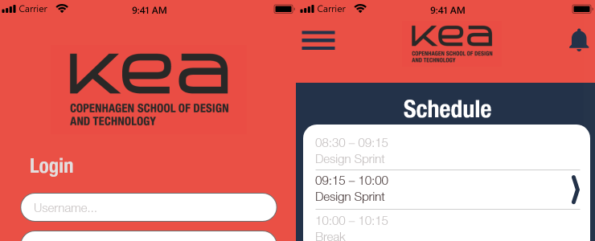
How to put into use the design sprint to find the best solution in a team. I understood how to be a good decider and not to be afraid to "Kill our darlings" for the sake of better solution.
I had to make the largest document and communicate the UX design solutions of each assignment, work and your workflow, that I made on this theme.
What I learned?
I managed to start documenting everything I did since from the start of the theme to an end. I got my first vision how professional multimedia designers work and now I am looking forward to extend my knowledge and seek the education forward.